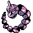
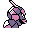

#095
Onix
RockGround
As it grows, the stone portions of its body harden to become similar to a diamond, but colored black
Base stats Total 340
HP35
Attack45
Defense160
Speed70
Special30
Details
- Species
- Rock Snake
- Height
- 28'10"
- Weight
- 463.0 lb
- Catch rate
- 45
- Base exp
- 108
- Growth
- Medium Fast
Level-up moves
LevelMoveType
StartTackleNormal
StartScreechNormal
Lv 9HardenNormal
Lv 17Rock ThrowRock
Lv 20RageNormal
Lv 27Rock SlideRock
Lv 33SlamDragon
Lv 35DigGround
Lv 37EarthquakeGround
Lv 49Stone EdgeRock
Evolution
Where to find
TM / HM
TM06 ToxicTM08 Body SlamTM09 Take DownTM10 Double-EdgeTM26 EarthquakeTM27 FissureTM28 DigTM31 MimicTM32 Double TeamTM34 BideTM36 SelfdestructTM44 RestTM47 ExplosionTM48 Rock SlideTM50 SubstituteHM04 Strength